Version 0.6 • July 2026 • for RadShield_Portable_v6.html
RadShield is a gamma dose-rate calculator that runs entirely in your web browser.
You build a 3D model of your radioactive sources and shielding, place a dose point, and RadShield
computes the dose rate by point-kernel integration with ANSI/ANS-6.4.3 buildup factors.
This guide walks through every feature click by click. Every screenshot was captured from the
actual program.
RadShield is one file. There is nothing to install.
To run RadShield
Copy RadShield_Portable_v6.html anywhere — desktop, USB stick, network share.
Double-click it. It opens in your default browser (Edge, Chrome, and Firefox all work) and runs completely offline.
Two conventions used everywhere in the program and in this guide:
Y is up. Positions are X / Y / Z in inches; Y is height above the floor grid.
An object's position is its bottom center — set Y = 0 and the object sits on the floor.
Physics documentation. This guide covers operating the program. How the numbers
are computed — the point-kernel equations, attenuation data, buildup factors, and the approximations —
is documented separately in docs/DESIGN.md.
2A tour of the screen
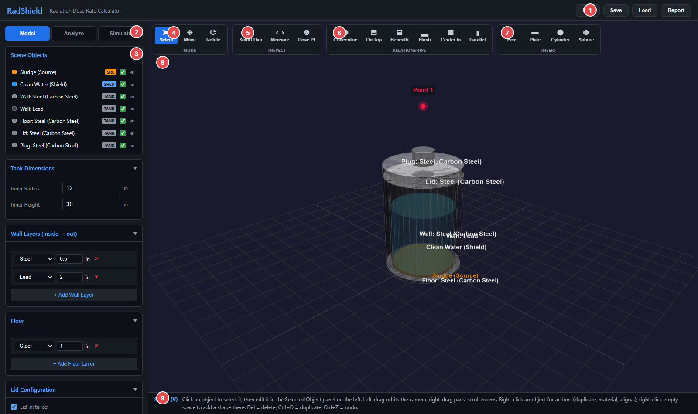
Figure 2-1. The RadShield window with each region numbered. The numbers match the table below.
#
Region
What it does
1
New / Save / Load / Report
Clear the scene; save everything to a .json file; load a saved file; generate a printable dose-assessment report. See chapter 12.
2
Sidebar tabs
The sidebar has three workspaces: Model (build and edit the scene — outliner, properties, insert, tank template),
Analyze (dose points, calculation settings, isodose, survey heat map, parameter sweep),
and Simulate (time simulations: transfers, discharges, spills).
3
Scene Objects list
Every object in the scene: material color dot, name, role badge (SRC source / SHLD shield / TANK tank part),
a green calculation checkbox, and a visibility eye. Click a row to select that object.
The tank template form lives below it on the Model tab.
4
Ribbon — Mode
SelectV, MoveG, RotateR — what your mouse does in the 3D view.
5
Ribbon — Inspect
Smart DimS, MeasureM, Dose PtD.
Smart Dim and Measure both use smart snapping — hover an object and the cursor locks to real
geometry (corners, edges, centers). See chapter 6.
6
Ribbon — Relationships
Six snap operations that place one object precisely against another. See chapter 5.
7
Ribbon — Insert
One-click Box, Plate, Cylinder, Sphere at the origin.
8
Status line
One-line feedback about the last action.
9
How-to bar
Always explains the active tool. During a Relationship it shows Step 1 / Step 2 instructions. When in doubt, read this bar.
Camera controls (work in every mode)
Action
Mouse
Orbit around the scene
Hold left button and drag
Pan (slide sideways)
Hold right button and drag
Zoom toward the cursor
Scroll wheel
Snap back to a standard view
⌂ Home View button in the top toolbar (View group)
Refit everything in view
Re-frame 3D View button at the bottom of the sidebar
Lost in space? If you zoom or rotate until the model is nowhere to be seen, click
⌂ Home View (top toolbar) — it snaps the camera back to a standard front-elevated view
that always shows the whole scene. It's the quickest way to recover.
Zoom to the cursor, rotate about the view. Scrolling zooms toward whatever is under
the mouse, so you can dive into one corner of a large scene without re-framing — and the zoom never hits a
stop: keep scrolling and you fly straight through walls and into enclosures (⌂ Home View brings you back
out). Rotation is separate: when you left-drag, the view spins about whatever is in the center of the
screen — the thing you're looking at stays put instead of the scene whipping around the last place you zoomed.
Center the detail you want to inspect, then orbit around it.
Hover for help. Nearly every button and field has a tooltip — rest the mouse on it for a second.
The how-to bar at the bottom always describes the active tool.
3Quick start: your first dose calculation
The fastest route to a dose number: generate a shielded tank from the template form,
place a dose point, press Calculate. Five minutes, start to finish.
3.1 Configure and build the tank
Procedure — build a tank from the template
In Tank Dimensions, enter the inner radius and inner height of the tank cavity.
Example used in the figures: 18" radius, 40" tall.
In Wall Layers (inside → out), define the wall build-up, one row per material layer.
Example: 0.5" Steel, then 2" Lead. Use + Add Wall Layer for more layers;
the × deletes a row. Choose Air (gap) as a layer material to model a real air gap — e.g.
a lined tank with a void between the liner and the outer shell — so the spacing is represented instead
of assumed solid.
In Floor, define the layers under the tank (example: 1" Steel).
In Lid Configuration, choose lid material and thickness. If the lid has an access hole, set
Opening Radius > 0 and optionally check Plug installed with the plug's material and thickness
(the plug fills the opening). Set Plug Outer Ø larger than the opening for a cover plate that
overlaps the lid — a bolt-down cover wider than the bore — or leave it 0 for a flush plug.
In Radioactive Source, pick the Isotope and total Activity in curies, and set the
Liquid Level (water depth from the tank floor).
Choose the Distribution — where the activity is within the liquid:
• Uniform (mixed) — spread through all the liquid.
• Settled (sludge on bottom) — all activity in a thin layer on the floor; set Sludge Thickness.
The clean water above acts as shielding.
• Custom layer — you choose the source layer height.
Press Build / Rebuild Tank. The tank appears in the 3D view and its parts
appear in Scene Objects.
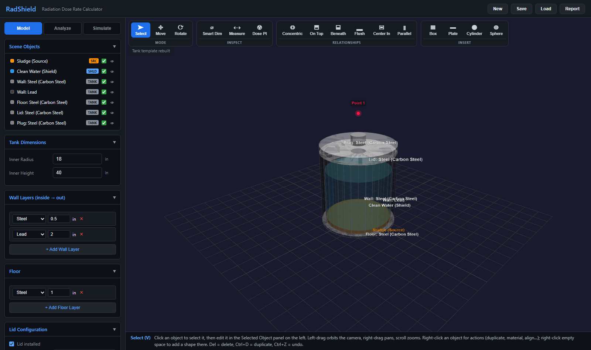
Figure 3-1. The example tank: 18" × 40", steel + lead walls, 25 Ci of Co-60 settled
into a 2" sludge layer (orange disk at the bottom), 30" of clean water above it (blue), steel lid with plug.
Rebuild is safe.Build / Rebuild Tank replaces only the
tank-template parts (walls, floor, lid, plug, source liquid). Objects you added yourself are kept.
3.2 Place your dose points
Dose points — the red markers — are the locations where the dose rate is evaluated
(where the worker stands, where the survey meter reads). You can have as many as you want,
each with a name, and every calculation reports all of them at once.
Procedure — set up named dose points
Switch the sidebar to the Analyze tab. The Dose Points panel is at the top.
Name the first point after its location — e.g. Tank Wall — and type its X / Y / Z
(inches; Y is up; the tank template is centered on the origin at floor level).
Or click that point's 🎯 Pick button and then click anywhere in the
3D view — an object surface or the floor — to place it by eye.
Click + Add Dose Point for each additional location — e.g. an
Operator position a few feet back. The D key also enters pick mode
for the most recently picked point.
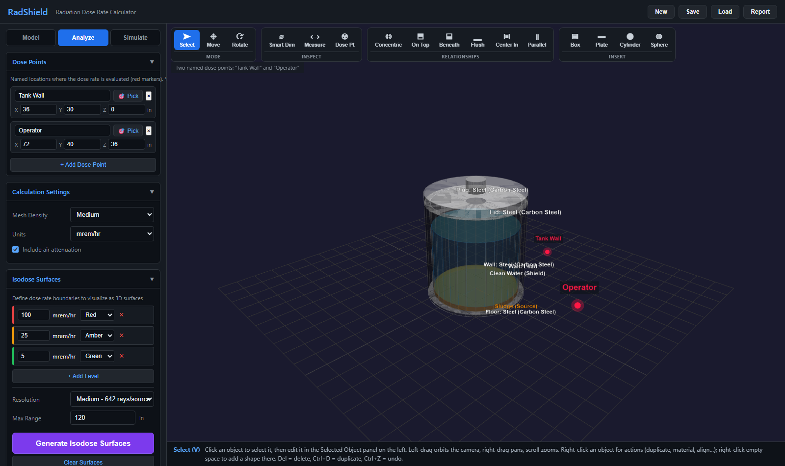
Figure 3-2. Two named dose points: "Tank Wall" at (36", 30", 0") and "Operator"
further back. Each red marker carries its name in the 3D view.
3.3 Calculate
Procedure — run the calculation
(Optional) In Calculation Settings (Analyze tab), pick a Mesh Density. Finer = more
accurate close to the source, slower. Medium is right for most work.
Press Calculate Dose Rate. The source is subdivided into hundreds of point
elements, and every element is ray-traced through every shield layer to every dose point.
Read the results overlay (next section). Each marker in the 3D view also shows its own dose rate.
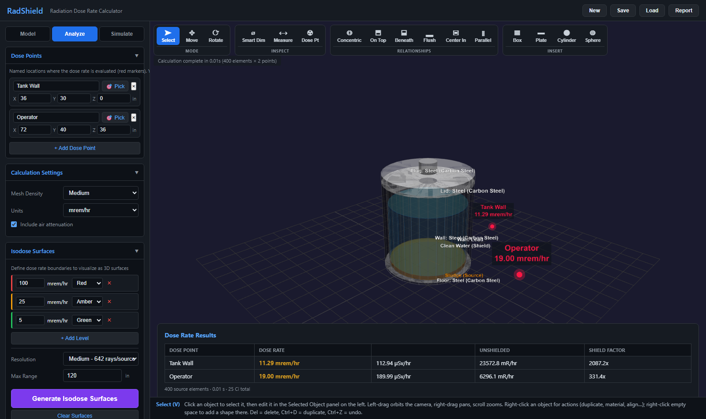
Figure 3-3. Results for the example tank at both dose points. With more than one
point the results appear as a table; a single point gets the large card layout.
3.4 Reading the results
Column / card
Meaning
Dose Rate
The answer per dose point, in mrem/hr with mSv/hr alongside (swap the primary with the Units setting).
Color: green < 5, amber 5–100, red > 100 mrem/hr.
Unshielded
Sanity check: the same sources as bare point sources at the same distances, from the isotope's
gamma-ray constant, with no shielding at all. Summed per source, each with its own isotope.
Shield Factor
Unshielded ÷ calculated — how much the shielding is buying you. If this looks absurd
(0.5×, or 10⁹×), inspect the geometry before trusting anything.
Footer line
How many source elements were integrated, runtime, total activity.
Include air attenuation (Calculation Settings) is on by default. It matters little
at a few feet but becomes significant at long range. Leave it on unless you are comparing against a code
that excludes it.
4Building custom geometry
Everything in the scene is an object you can create, move, rotate, resize, re-material,
duplicate, and delete. The tank template is just a starting point — you can also start from an empty scene
(New).
4.1 Inserting shapes
Procedure — insert a shape (three equivalent ways)
Ribbon → Insert: click Box, Plate,
Cylinder, or Sphere. The shape appears at the origin, selected.
Sidebar → Insert panel: same shapes plus + Disk,
+ Annulus (hollow cylinder / pipe section), and the orange
+ Source / + Source Ball buttons which insert ready-made sources.
Right-click empty space in the 3D view → "Add at this point" — the shape spawns where you clicked.
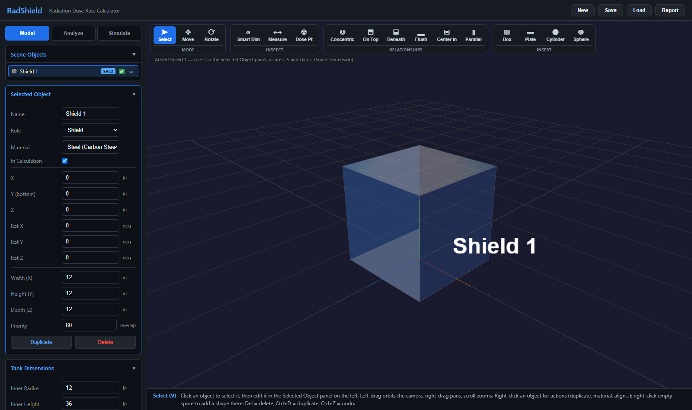
Figure 4-1. A fresh 12" box. It spawns selected: its properties fill the
Selected Object panel, and the status line points you at the two ways to resize it.
Shape
Dimensions
Typical use
Box / Cube
Width (X), Height (Y), Depth (Z)
Shield blocks, containers, room features
Plate / Wall
Thin box, 24 × 24 × 0.5" default
Shield panels; rotate 90° to make a wall
Cylinder
Radius, Height
Tanks, bottles, plugs, columns
Disk
Radius, Thickness
Flat plates, lids, filter beds
Annulus
Inner radius, Outer radius, Height
Pipe walls, tank wall sections
Sphere
Radius
Collection bulbs, compact sources
Everything inserts as a steel shield except the orange Source buttons.
That's deliberate — an accidental extra shield is harmless, an accidental extra source would silently
inflate every result. Any shape can be converted to a source afterward (§4.4).
4.2 Resizing — two ways
Object dimensions are edited numerically (the Move/Rotate gizmo never stretches geometry).
Procedure — Smart Dimension (the fast way)
Press S or click Smart Dim in the ribbon.
Move over the 3D view — the object under the cursor lights up and the face you are pointing at is
highlighted (the same smart-snapping visuals as Measure, chapter 6), so you can see exactly what
you're about to click.
Click the object. A popup opens at your cursor with exactly that object's dimensions.
Type new values — each applies the moment you leave the field (and is undoable with Ctrl+Z).
Click another object to edit it next, or press Esc to close.
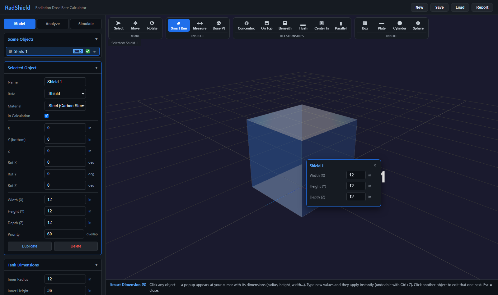
Figure 4-2. Smart Dimension on a box: Width / Height / Depth right at the cursor.
The same fields are always in the Selected Object panel on the left, along with position and rotation.
4.3 Moving and rotating
Tool
How it works
MoveG
Drag the red / green / blue arrows (X / Y / Z; green is up). Snaps to ¼".
RotateR
Drag the colored rings. Snaps to 15°.
Exact values
Type into X / Y (bottom) / Z and Rot X / Y / Z in the Selected Object panel.
4.4 Making an object radioactive (assigning activity)
Procedure — turn any shape into a source
Right-click the object and choose Make Source (radioactive) — or select it and set
Role to Source in the Selected Object panel.
Two new fields appear in the panel: choose the Isotope (Co-60, Cs-137, Ir-192, I-131, Na-24)
and enter the Activity in curies.
Set the Material to what the source physically is — e.g. Water for tank liquid or wet sludge.
This is the self-shielding medium inside the source and it participates in the attenuation.
Confirm the object now shows the orange SRC badge in Scene Objects.
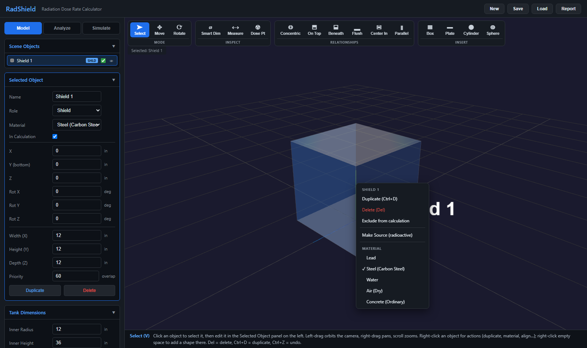
Figure 4-3. The right-click menu: Duplicate, Delete, Exclude from calculation,
Make Source / Make Shield, and a one-click material picker.
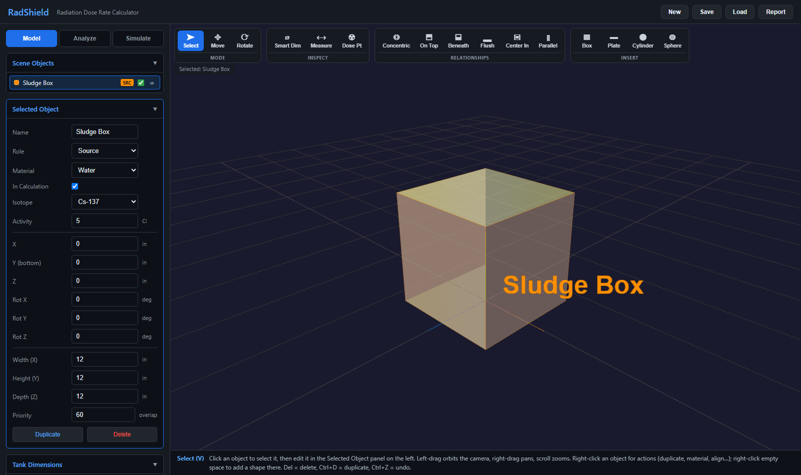
Figure 4-4. The box converted to a 5 Ci Cs-137 water-filled source named "Sludge Box".
Role, Isotope, Activity, and Material all live in the Selected Object panel.
Mixed isotopes are fine. A Co-60 tank and a Cs-137 bottle can share a scene —
every source is transported with its own gamma lines and the results add correctly.
4.5 Overlapping shapes — the Priority rule
Shapes are allowed to overlap; that's how composite geometry is modeled. Where two objects occupy the
same space, the one with the higher Priority (bottom of the Selected Object panel) decides the
material at that point. Examples from the tank template: the plug (priority 55) wins inside the lid opening
(lid 50); the sludge source (20) wins inside the water column (10).
If an overlap behaves wrongly — e.g. a source you embedded in a tank seems to be
"seeing" water instead of its own material — check the Priority fields first. The inner, more specific object
needs the higher number.
4.6 Duplicate, delete, undo
Ctrl+D or right-click → Duplicate: copies the object 6" over in X.
Del or right-click → Delete.
Ctrl+Z / Ctrl+Y: undo / redo — 50 levels, covers every edit including deletes and New.
5Positioning with Relationships
The Relationships ribbon group snaps one object into an exact pose relative to
another. No eyeballing with the Move arrows.
Procedure — apply a relationship
Click a relationship button in the ribbon (it highlights; the how-to bar starts walking you through).
Click the object you want to move — in the 3D view or in the Scene Objects list.
Shortcut: if the right object is already selected, this step is skipped automatically.
Click the target object. The mover snaps into place. Esc cancels at any point.
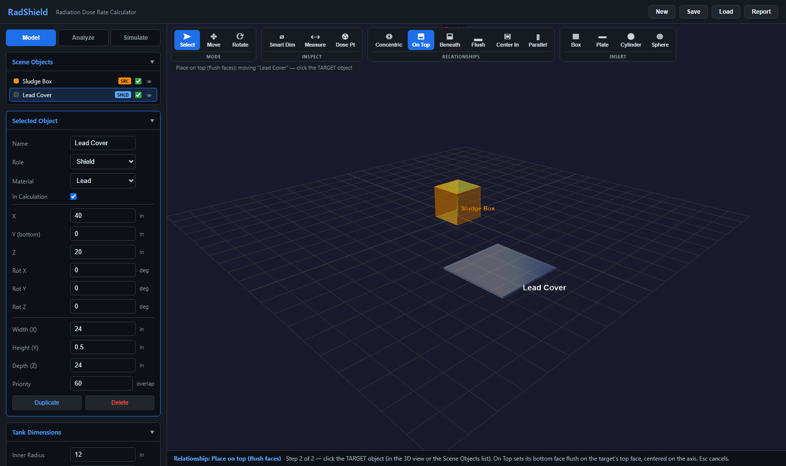
Figure 5-1. "On Top" in progress with the Lead Cover plate pre-selected — the how-to bar
(bottom) says exactly what to click next and what the relationship will do.
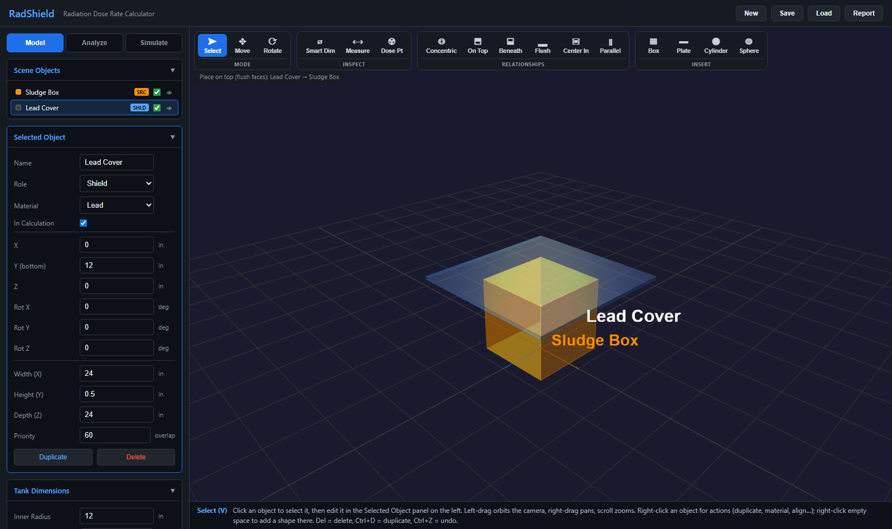
Figure 5-2. After the mate: the plate snapped flush onto the source box, centered,
and the status line records "Place on top (flush faces): Lead Cover → Sludge Box".
Relationship
Result (mover relative to target)
Concentric
Shares the target's axis; keeps its own height along that axis.
On Top
Bottom face sits flush on the target's top face, centered on the axis.
Beneath
Flush against the target's underside, centered.
Flush
Both bottom faces on the same plane; sideways offset kept.
Center In
Centered inside the target — e.g. a source centered in a container.
Parallel
Orientation matched to the target; position unchanged.
Relationships are persistent. Once applied, the mover stays linked to its target and
follows later geometry changes — make a tank taller with Smart Dimension and a cover mated On Top
rides up with it. To break the link, right-click the mover and choose Remove relationship (unlink);
it is then free to move on its own again. The same relationship operations are also available by selecting
the mover, right-clicking the target, and using the Align … to this submenu.
6Measuring with smart snapping
The Measure tool reports the straight-line distance and the X / Y / Z
offsets between any two points. Crucially, it doesn't make you aim at empty space — as you hover, the cursor
snaps to the real geometry (corners, edges, rim quadrants, face and axis centers). Every measurement
is anchored to a feature you can name.
6.1 How snapping works
Enter Measure mode (M or Measure) and move the mouse over
an object — three things happen at once:
The object under the cursor lights up, and the specific face you are pointing at is
outlined in cyan (a panel on a box, the end cap of a cylinder, the rings of a pipe wall).
A colored snap marker jumps to the nearest key point, with a small label naming it
(Top center, Corner, Rim quadrant, …).
The marker's shape and color tell you what kind of point it is (table below), so you know at a
glance whether you're on a corner, an edge, or a center.
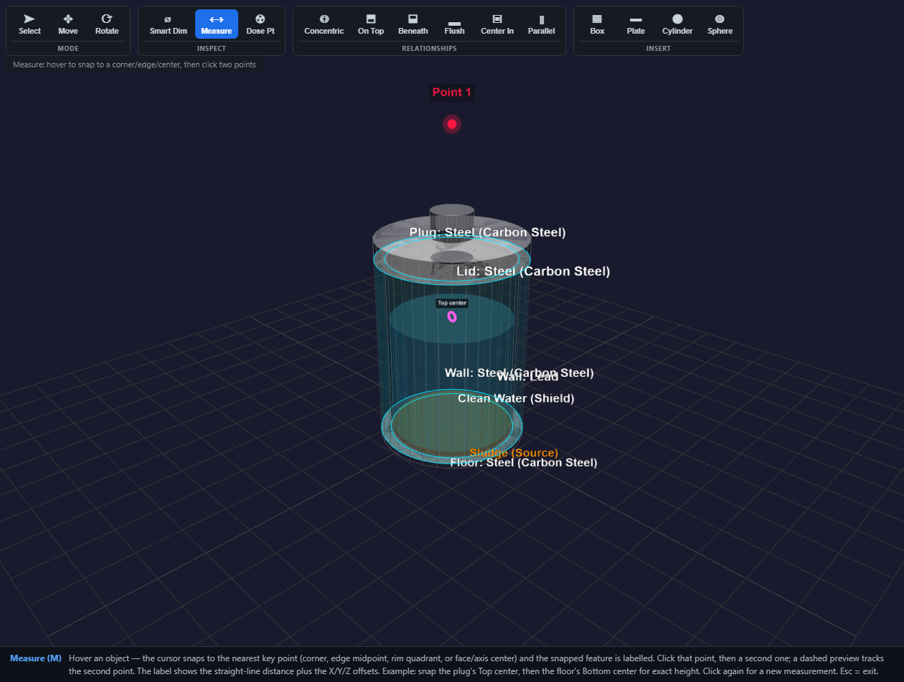
Figure 6-1. Hovering the tank in Measure mode. The cyan rings highlight the surfaces
under the cursor and the magenta ring marks the snapped Top center key point — labelled right at
the cursor. The how-to bar along the bottom always restates the current behavior.
Marker
Key point
Where it appears
Amber cube
Corner / vertex
The 8 corners of a box; the top and bottom poles of a sphere. Highest priority — corners win ties.
Cyan diamond
Edge midpoint / rim quadrant
The midpoint of each box edge; the four quarter points (front / back / left / right) around the rim of
a cylinder, disk, pipe, or sphere.
Magenta ring
Face or axis center
The center of each box face; the top, bottom, and mid-height center of a cylinder or disk; the axis
top and bottom of a pipe (annulus); a sphere's center.
White dot
On the surface / on the floor
The fallback when no key point is close — the exact spot on the face, or on the floor grid, under the cursor.
Nearest wins, but corners beat edges beat centers. When two key points are about equally
close to the cursor, the higher-priority one is chosen (a corner over an edge, an edge over a center). To grab
a specific point, just nudge the cursor a little closer to it.
6.2 Taking a measurement
Procedure — measure between two features
Press M or click Measure.
Hover the first feature until the marker and label show the point you want, then click.
A green dot marks it.
Move toward the second feature. A dashed preview line stretches from the first point to the
live snap, so you can watch the measurement form before you commit.
Click the second feature. The line locks in with a label showing the total distance (inches
and feet) and the ΔX / ΔY / ΔZ components; the status line repeats it with both endpoint
coordinates.
Click again to start a fresh measurement; Esc exits and clears the graphics.
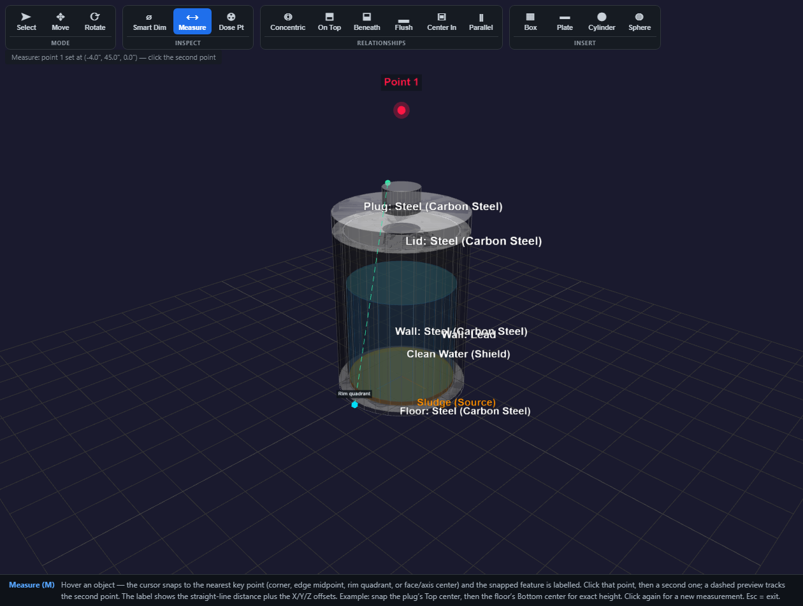
Figure 6-2. First point placed on the plug at the top (green dot); the dashed preview
line tracks down to the live snap — here a Rim quadrant (cyan diamond) at the tank floor.
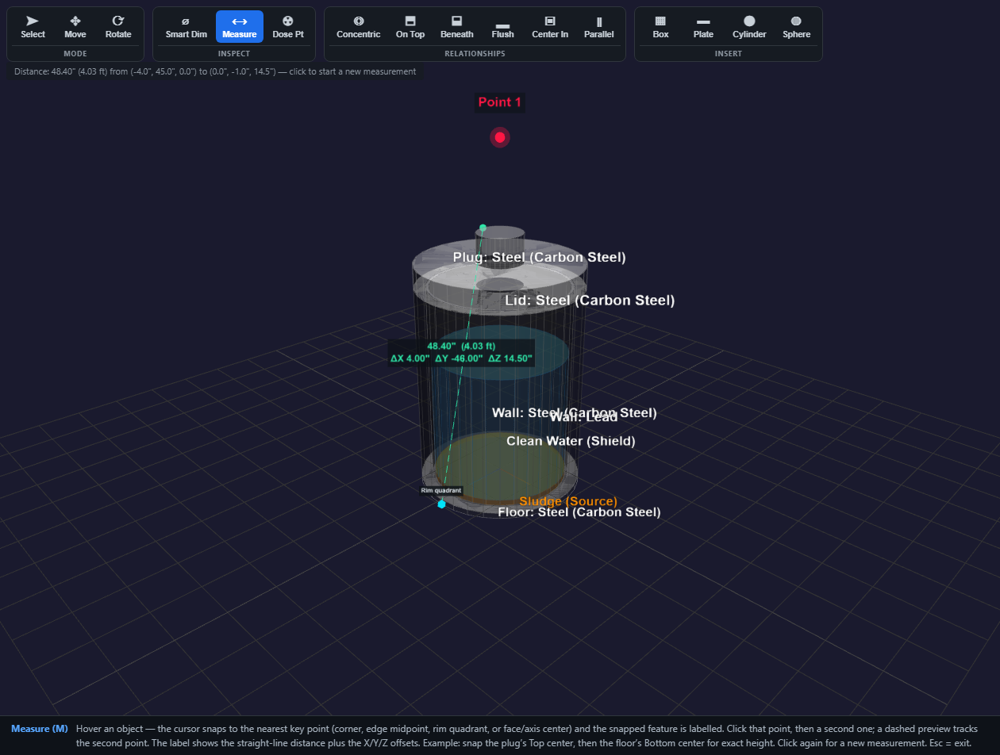
Figure 6-3. The finished measurement: 48.40" (4.03 ft), with the per-axis deltas on the
label and the full endpoint coordinates echoed in the status line.
6.3 Example: the exact height of a tank
This is the measurement snapping was built for — the overall height from the top of the plug to the
bottom of the tank, with nothing to eyeball:
Procedure — plug top to tank bottom
Press M. Orbit so you can see both the plug on top and the base of the tank.
Hover the top of the plug until the marker reads Top center (magenta ring), and click.
Move down to the base and hover until it reads Bottom center — or a Rim quadrant on the
floor if the underside is hidden — and click.
Read the height straight off the label. If the two points share the same X and Z, the ΔY value
is the pure vertical height.
Measurements stack, and are easy to undo. Each finished measurement stays on screen so
you can lay down several at once. To remove one, click its green midpoint dot; Del
removes the most recent, and Esc cancels a half-placed one (after the first click).
They persist when you switch tools, so you can measure, model, and measure again.
Snap to isodose surfaces. When isodose surfaces are showing (Chapter 8), Measure also
snaps to the grid points on those surfaces — so you can measure straight from a source or wall to a specific
point on the 1 mrem/hr boundary. And in Smart Dim mode the same hover highlight
shows exactly which object — and which face — you are about to click before the dimension popup opens, so you
never edit the wrong part.
7Controlling what is calculated
7.1 Two different toggles on every object
Each row in Scene Objects has two independent switches — the distinction matters:
Toggle
Effect
The eye 👁
Visibility only. A hidden object is still fully present in the physics. Use it to unclutter the view.
The green checkbox
The physics. Unchecked, the object contributes nothing: no attenuation, no source activity,
no material. It draws as a faint ghost labeled "(excluded)" and its row is struck through.
Figure 7-1. The Lead Cover unchecked: ghosted in the 3D view, struck through in the list,
ignored by every calculation. One click restores it.
7.2 Instant what-if comparisons
Procedure — "what is this shield worth?"
Press Calculate Dose Rate with the object enabled. Note the result.
Uncheck the object's green box in Scene Objects.
Press Calculate Dose Rate again.
The ratio of the two numbers is that object's shielding factor at that dose point. Re-check the box when done.
Same trick for sources: disable one source of several to see each source's individual
contribution to a dose point.
8Isodose maps of the radiation field
Isodose surfaces draw the boundary of a chosen dose rate — "the 100 mrem/hr line" —
as a translucent 3D shell around your sources, with distances labeled.
Procedure — generate isodose surfaces
In the Isodose Surfaces panel, define one or more levels with + Add Level —
a dose rate in mrem/hr and a display color each (e.g. 100 red, 25 amber, 5 green).
Pick a Resolution. More rays per source = smoother shells, longer runtime. Start with Low, rerun
at Medium/High when the picture is right.
Set Max Range larger than the farthest boundary you expect (rays stop searching there).
Press Generate Isodose Surfaces and watch the progress percentage.
Runtime scales with rays × levels × sources.
To remove the shells, press Clear Surfaces.
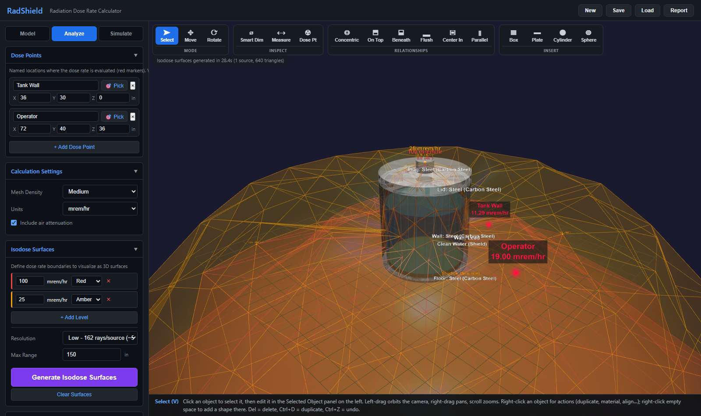
Figure 8-1. The 100 mrem/hr (red) and 25 mrem/hr (amber) boundaries around the example tank.
Each surface carries distance labels at its top, bottom, and four sides.
8.1 Reading and probing the surfaces
Labels on each shell give the distance from that source at six key points, in feet and inches.
Double-click anywhere on a shell to probe it: the level, the distance from the nearest source,
and the exact X/Y/Z of the point you clicked.
Isodose is a visualization. The dose-point calculation (chapter 3) with its finer mesh is the
number of record — expect small differences.
8.2 Multiple sources
Every enabled source grows its own shells (the dose at every point still correctly sums all sources —
nearby sources' shells merge into a single dumbbell). Two 0.1 Ci sources 10 m apart produce exactly
what a survey would find — a hot bubble around each source and background in between:
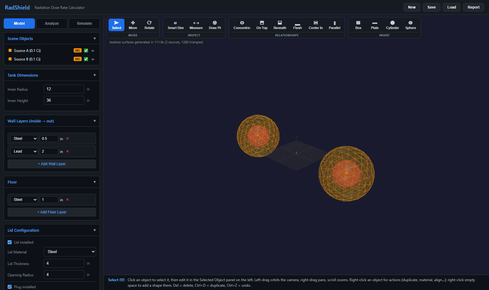
Figure 8-2. Two separated 0.1 Ci Co-60 sources: individual 100 mrem/hr (red) and
25 mrem/hr (amber) bubbles around each. Nothing phantom appears in the empty middle.
9Survey heat map & parameter sweep
9.1 Survey heat map
The heat map paints the dose rate onto a horizontal plane across the whole scene —
the same picture as a posted survey map, computed instead of measured.
Procedure — generate a survey heat map
On the Analyze tab, open Survey Heat Map.
Set the Height of the survey plane (waist/chest height of a worker — 40" is typical).
Set the Grid Spacing (12" default; smaller = smoother but slower) and the
Half-Extent (how far the map reaches from the scene center).
Leave Draw isodose rings + distances checked and list the dose-rate contours you care about in
Ring Levels (mrem/hr, comma-separated — e.g. 1000, 100, 10, 1). Each becomes a labelled
ring traced on the map.
Press Generate Heat Map and watch the progress percentage.
A 20 ft map at 6" spacing takes a few seconds.
Read the ring table below the button: each level lists its average distance from the source and
the min–max spread, so you can post "1 mrem/hr at ~5 ft" directly. Clear
Heat Map removes everything.
Rings vs. wash. The colored wash is deliberately faint so the crisp contour rings
read clearly on top — the rings are the boundaries you actually post. Turn the rings off to see the smooth
color field alone.
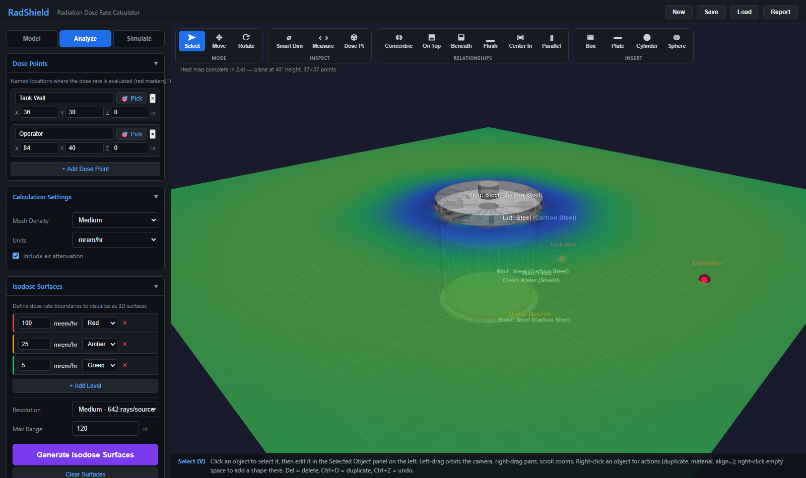
Figure 9-1. Survey plane at 40" height around the example tank. Colors follow the
survey-map convention, one decade per band: blue ≤ 1, green 1–10, yellow 10–100, orange 100–1,000,
red ≥ 1,000 mrem/hr (legend in the panel). Note the blue "shadow" ring next to the tank —
at lid height the full water column shields the slant paths, while distant floor-level paths exit
through the bottom of the wall where there is little water: geometry you can see at a glance.
9.2 Parameter sweep
The sweep answers "how thick does it need to be?" in one click: vary one dimension of
one object across a range and chart the dose at every dose point against it.
Procedure — dose vs. shield thickness
Select the object to vary (click it in the 3D view) — e.g. the lead wall layer.
On the Analyze tab, open Parameter Sweep and click
Use selected object.
Pick the Dimension to vary (radius, height, thickness, outer radius, …) and enter the
From / To range in inches and the number of Steps.
Press Run Sweep. The chart plots dose rate vs. the swept value, one line
per dose point. The object is restored to its original size afterward.
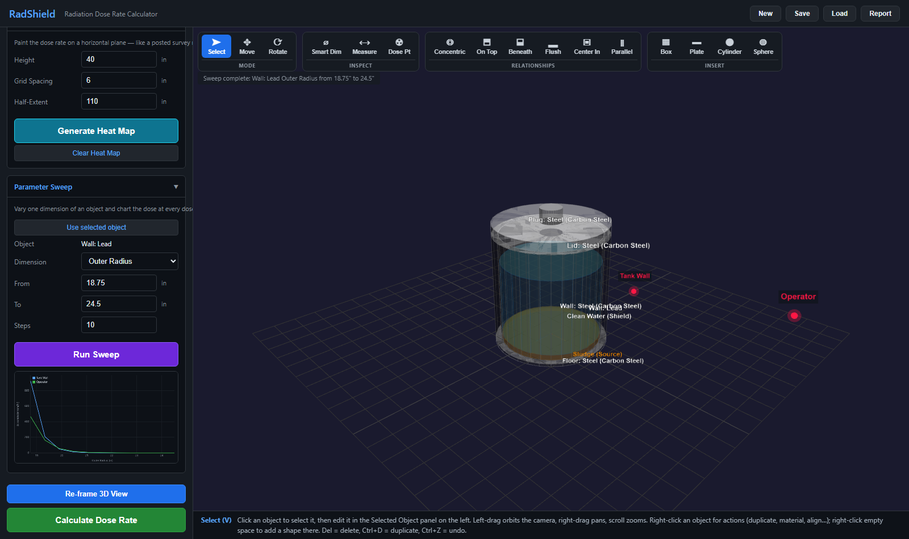
Figure 9-2. Dose rate at both dose points vs. the lead wall's outer radius
(i.e. lead thickness from ¼" to 6"). Read off the thickness that meets your limit directly.
10Time simulation: transfers, discharges & spills
The Simulate tab animates radiation levels changing over time:
pumping activity from one vessel to another, receiving a discharge through a hose, or spilling liquid
onto the floor. For every dose point you get the dose-rate-vs-time curve, the peak, and — the number a
planner actually needs — the integrated dose for the whole evolution.
10.1 Transfers
A transfer moves a quantity of activity over the duration of the simulation:
From → To: any source object to any other. "(outside scene)" on either end models activity
entering from upstream or leaving to somewhere you don't care about. The destination must be a
Source object — activity 0 is fine (an empty tank waiting to receive).
Ci: the total curies moved over the duration.
Curve: how the flow is shaped in time — linear (constant rate), S-curve (slow-fast-slow),
front-loaded, or back-loaded.
via / Ci transit: an optional carrier — the hose. While the flow is active the carrier holds
the stated transit inventory (the activity that is physically inside the hose at any moment), and
it flushes to zero when the transfer ends.
Procedure — 10 Ci into a tank through a hose over 30 minutes
Model the receiving tank with its source volume at 0 Ci (or use the tank template and set the
sludge activity to 0), and build the hose (chapter 11 — give it radioactive contents with 0 Ci).
Place your dose points (chapter 3.2) — e.g. at the tank wall and the operator's position.
Switch to the Simulate tab. Set Duration = 30 min and
Time Steps = 30.
In Transfers: From (outside scene) to the tank's sludge volume, 10 Ci,
curve of your choice; via = the hose, with the transit inventory the hose holds while flowing
(e.g. 0.5 Ci).
Press Run Simulation. The dose matrix is precomputed once (a few seconds),
then the whole timeline is evaluated instantly.
Read the chart (one line per dose point) and the summary table: peak dose rate with the time
it occurs, and the integrated dose in mrem — what a worker standing there for the whole
evolution would accumulate.
Press ▶ or drag the scrubber to play it back: every marker in the 3D
view shows its live dose rate at that moment.
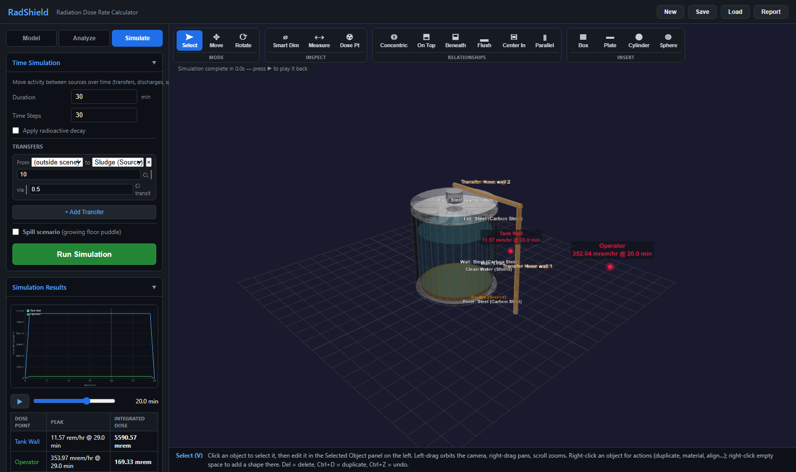
Figure 10-1. The hose transfer at t = 20 min: the chart (left) shows the dose rate
climbing as the tank fills — and dropping sharply at t = 30 when the hose flushes. Both markers read
their live values. The summary table gives peak and integrated dose per point.
Decay. Check Apply radioactive decay to decay every source by its isotope's
half-life as the clock runs. Irrelevant for a 30-minute Co-60 evolution; very relevant for hours of Na-24
or a multi-day I-131 timeline.
10.2 Spill scenario
The spill models a puddle on the floor that grows as liquid escapes: radius =
√(volume / (π · depth)), fed with activity from the source it drains from.
Procedure — simulate a spill
On the Simulate tab, check Spill scenario.
Pick the source it drains From, the total activity and liquid volume spilled,
the puddle depth (¼" is a reasonable flat-floor guess), and where the puddle is centered.
Set the duration and press Run Simulation. A "Spill Puddle" source object is
created automatically and grows through the timeline (its dose is re-computed per step since its
geometry changes).
Play it back — the puddle spreads across the floor in the 3D view while the dose curves climb.
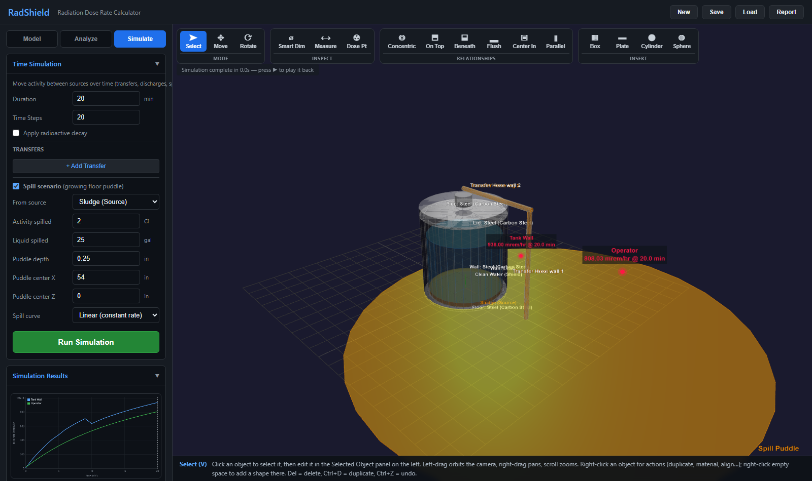
Figure 10-2. End state of a 25-gallon, 2-Ci spill: the puddle has spread ~7 ft
across the floor and the operator point has climbed to ~0.8 rem/hr. The chart shows both dose points
rising as the puddle grows toward them.
Model notes. Transferred activity adopts the destination's isotope (keep a single
transfer chain to one isotope); decay is applied to the post-transfer inventory (slightly conservative for
activity that arrives late); the growing puddle contributes dose but its negligible self-shielding effect
on other sources' rays is not re-traced. Scrubbing the timeline moves the puddle's drawn size —
run the simulation again (or scrub to t = 0) to reset it.
10.3 Animate the radiation field & export a GIF
A dose curve tells you how the numbers move. Sometimes you want to see the field itself grow — the
whole isodose envelope swelling as a demineralizer loads, a tank fills, or a puddle spreads. RadShield can
animate the isodose surfaces across the timeline and hand you a shareable animated GIF, all offline, right
inside the program.
Procedure — animate the field over time
First set up the field you want to watch: on the Analyze tab, add your
Isodose levels (e.g. 100 / 20 / 2 mrem/hr) and pick a resolution and max range.
The animation reuses exactly these levels. Low resolution is recommended — every frame is a
full isodose computation, so cost multiplies by the frame count.
Run your simulation as usual (transfer, discharge, or spill) so the timeline and dose curves exist.
In Simulation Results, check Animate the radiation field over the
timeline, set a frame count (12 is a good default), and press
Build field animation. RadShield replays the simulation's per-step activity
into the sources and computes the isodose surfaces at each frame (watch the progress in the status bar).
Now scrub or press ▶: the field grows and shrinks in the 3D view in step
with the dose markers — an empty scene at t = 0 blooming into the full envelope at the end.
Press Export animated GIF… to render every frame — each captioned with the
elapsed time, percent complete, active curies, and per-point dose — and download a self-contained
radshield-field-animation.gif you can drop into a report or e-mail.
Reproducing the demo. This is exactly how the demos/ demineralizer
field-growth animation is made — a 6′ concrete cube with a 24″ demineralizer filling to 1.89 Ci
over 500 minutes. Everything you need ships in the one HTML file; no external tools.
Cost & freshness. Building the animation is the slow step — it is (frames ×
one isodose generation). Keep the resolution Low and the frame count modest for a first pass. Any change to
the geometry or a fresh Run Simulation clears the built animation, so build it last,
after the scene is settled.
11The Pipe / Hose Builder
For contaminated hose runs and piping, the builder generates the whole run — contents plus
walls, correctly rotated, with no gaps at the corners — from a simple list of legs.
Procedure — build a pipe or hose run
Open Insert panel → Pipe / Hose Builder…
Set the start point (bottom of the first leg). To start from a tank fitting, select the tank
first and click Use top-center of selected object.
Define the cross-section: outer radius, wall thickness, wall material, contents material.
Wall thickness 0 = an unjacketed stream.
If the contents are radioactive, leave Contents are radioactive checked and set the isotope and
the total activity in the run — it is split across the legs in proportion to their volume.
Build the legs list in order from the start: direction (+Y up, −Y down, ±X, ±Z) and length.
+ Add Leg for each segment of the routing.
Press Build Pipe.
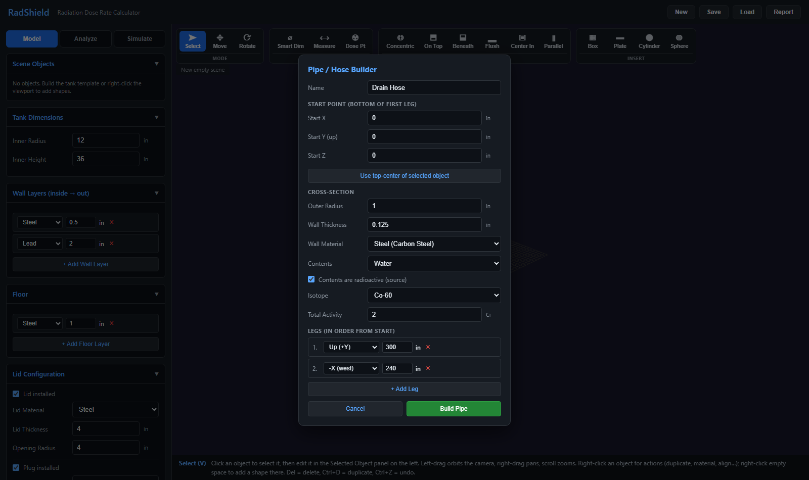
Figure 11-1. The builder configured for a 1" OD hose with 0.125" steel wall carrying
2 Ci of contaminated water.
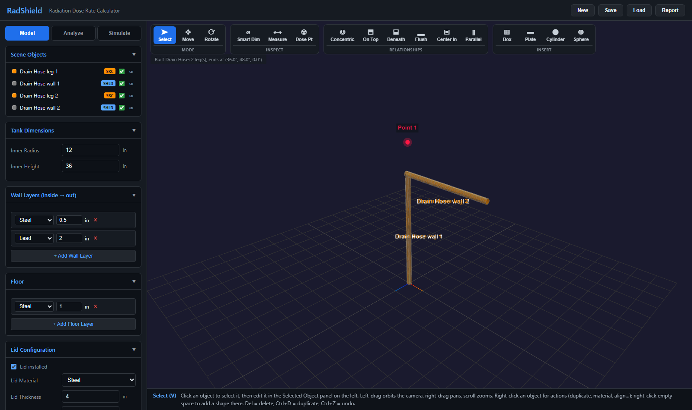
Figure 11-2. The generated run — 48" up, then 36" east. Each leg is a contents cylinder
plus a wall annulus, back-filled at the bend so there is no void. All parts are ordinary objects afterward:
selectable, editable, deletable — and usable as the "via" carrier in a time simulation (chapter 10).
12Saving, loading & reports
12.1 Save / Load
Procedure — save and restore your work
Press Save (top right). A radshield-scene.json file downloads.
Rename it to whatever you like.
The file contains everything: every object (positions, rotations, dimensions, materials,
roles, isotopes, activities, calc checkboxes), the tank form settings, all named dose points,
calculation settings, and your isodose level list.
To restore: press Load and pick the file. The scene, the tank form, and all
settings return exactly as saved.
The files are plain JSON — human-readable text. They diff cleanly, archive well,
and can be emailed alongside the portable HTML so a colleague can reproduce your exact analysis.
12.2 Printable dose-assessment report
Procedure — generate a report
Press Report (top right). RadShield runs a fresh calculation at every dose
point and opens a records-quality report in a new tab.
The report contains: a snapshot of the 3D scene, the dose-rate results table for every dose point,
a full inventory of sources (isotope, activity, material, dimensions, position, exclusion flags)
and shielding, the calculation settings, and a one-paragraph statement of method.
Click the report's Print / Save as PDF button to file it.
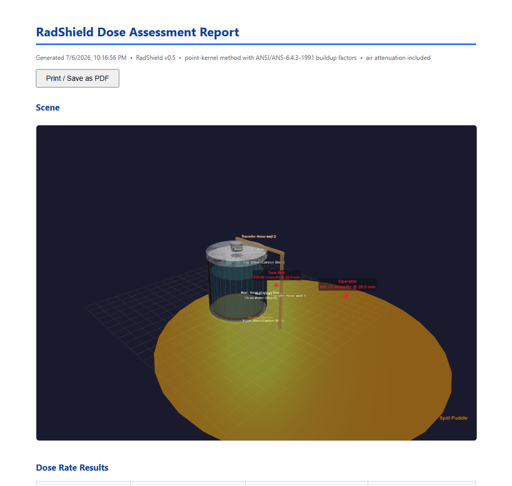
Figure 12-1. The generated report — scene picture, per-point results, and full
inventory, ready to print or save as PDF.
13Worked examples
13.1 Filter-bed tank (activity suspended above the floor)
Scenario: sludge caught in the top 3" of a filter bed, clean media below, water above
Build the tank from the template with the full water level, distribution Uniform, and a
placeholder activity of 0 — or simply delete the template's source object after building.
Insert a Disk; Smart-Dimension it to the tank's inner radius and 3" thickness.
Right-click it → Make Source; set isotope, activity, and Material = Water.
Set its Y (bottom) to the top-of-bed height (e.g. 12" if the bed ends 15" up), or use
Concentric to the tank then type the Y.
Give the disk Priority 30 so it wins the overlap against the water column (priority 10).
Place the dose point, Calculate.
13.2 Shield-wall study (how thick does the lead need to be?)
Scenario: size a lead wall between a source and an operator
Model the source (any shape; set isotope/activity).
Insert a Plate; set Material = Lead. Rotate it 90° about X or Z if you need it standing upright.
Position it between source and operator; place a dose point at the operator.
Select the plate and run a Parameter Sweep (chapter 9.2) on its thickness — the chart hands
you dose vs. thickness in one shot; read off the value that meets your limit.
13.3 Two containers in one room
Scenario: a shielded tank plus a vent-path collection bottle
Build the tank from the template.
Insert a Cylinder for the bottle; size it (e.g. 6" radius × 18"); make it a Source with its own
isotope and activity — different isotopes are handled correctly.
Move the bottle to its real location (Move mode, or type coordinates).
Place the dose point where the worker stands; Calculate — both sources contribute through their own shielding.
Generate isodose surfaces to see both hot zones and any overlap region.
13.4 Planning a transfer evolution (dose budget for the job)
Scenario: pump 10 Ci of contaminated water into a receiving tank; how much dose does the operator take?
Build the receiving tank (template) with its source volume at 0 Ci.
Build the transfer hose with the Pipe Builder (radioactive contents, 0 Ci initial).
Add dose points at every place a person will be: valve station, tank side, walkway.
Simulate tab: transfer From (outside scene) To the tank sludge, 10 Ci over 30 min, via the hose
with its transit inventory; pick the curve that matches the pump behavior.
Run. The summary table's integrated dose column is the per-location dose budget for the
evolution; the peak column tells you the worst moment. Move the dose points or add shielding and
re-run until the budget fits.
14Reference: shortcuts & troubleshooting
14.1 Keyboard shortcuts
Key
Action
Key
Action
V
Select mode
S
Smart Dimension
G
Move mode
M
Measure
R
Rotate mode
D
Dose-point pick
Del
Delete selected
Esc
Cancel tool / relationship, close popups
Ctrl+D
Duplicate selected
Ctrl+Z / Ctrl+Y
Undo / Redo
14.2 Troubleshooting
Symptom
Likely cause and fix
Dose rate is zero
No enabled source with activity > 0. Check for the orange SRC badge and the green checkbox on your
source; check Activity isn't 0.
Dose rate absurdly high / "Infinity"
The dose point is inside a source. Move it outside; use Measure to verify the distance.
A shield seems to do nothing
Its green calc checkbox is off (row struck through), or the ray from source to dose point doesn't
actually pass through it — orbit the camera and sight down the line, or Measure to check the geometry.
Overlapping shapes give the wrong material
Priority. Select each object and check the Priority field — the higher number wins the overlap (§4.5).
Isodose shows nothing for a level
That dose rate doesn't exist ≥1 cm outside the source (level too high), or Max Range is too small for a
low level. Adjust the level or the range.
Everything disappeared
Probably New. Press Ctrl+Z.
Loaded a scene but the tank form looks wrong
The file was saved by v0.4 or older (form state wasn't saved then). Set the form once, rebuild, re-save.
Simulation says "Nothing to simulate"
Add at least one transfer with Ci > 0, enable the spill, or check decay. A transfer also needs a
From or To that isn't "(outside scene)" on both ends.
Transfer destination missing from the dropdown
Destinations must be Source objects. Select the receiving object and set Role = Source
(activity 0 is fine), then reopen the Simulate tab.
Puddle stayed big after playing a spill
Scrubbing draws the puddle at the scrubbed time. Drag the scrubber back to 0, or re-run the simulation.
Heat map is one flat color
The whole plane is within one decade. That's real — the color scale is fixed (0.1 to 10k mrem/hr)
so maps compare across scenes.
RadShield User Guide — v0.6, July 2026. Physics & methodology: docs/DESIGN.md.
This document is self-contained (images embedded) and prints cleanly — use your browser's Print → Save as PDF.